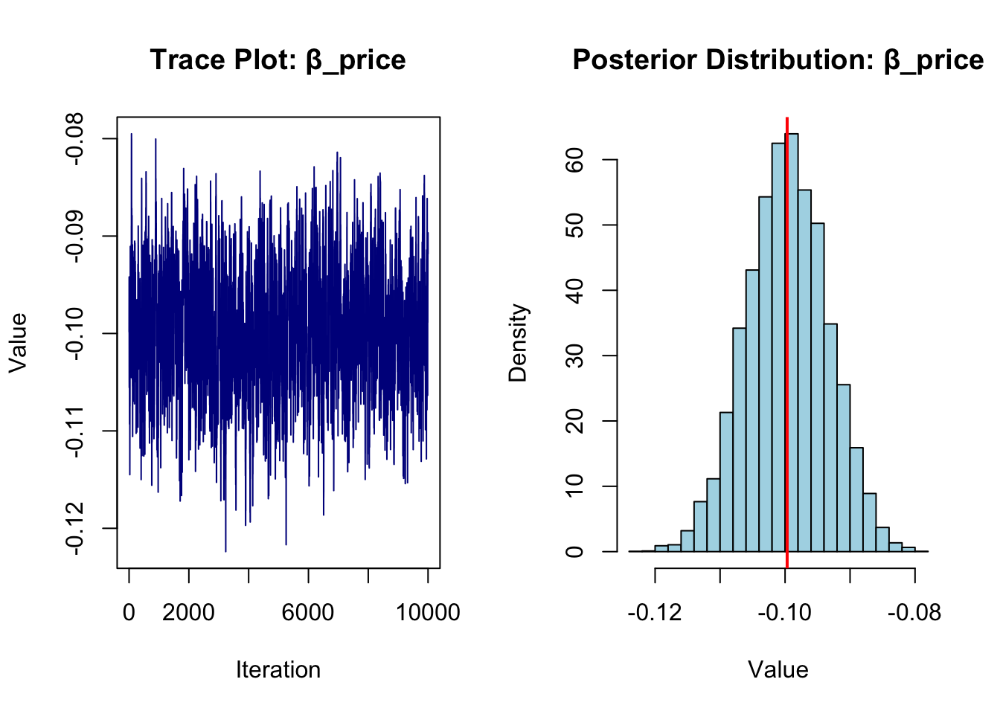

This assignment expores two methods for estimating the MNL model: (1) via Maximum Likelihood, and (2) via a Bayesian approach using a Metropolis-Hastings MCMC algorithm.
1. Likelihood for the Multi-nomial Logit (MNL) Model
Suppose we have \(i=1,\ldots,n\) consumers who each select exactly one product \(j\) from a set of \(J\) products. The outcome variable is the identity of the product chosen \(y_i \in \{1, \ldots, J\}\) or equivalently a vector of \(J-1\) zeros and \(1\) one, where the \(1\) indicates the selected product. For example, if the third product was chosen out of 3 products, then either \(y=3\) or \(y=(0,0,1)\) depending on how we want to represent it. Suppose also that we have a vector of data on each product \(x_j\) (eg, brand, price, etc.).
We model the consumer’s decision as the selection of the product that provides the most utility, and we’ll specify the utility function as a linear function of the product characteristics:
\[ U_{ij} = x_j'\beta + \epsilon_{ij} \]
where \(\epsilon_{ij}\) is an i.i.d. extreme value error term.
The choice of the i.i.d. extreme value error term leads to a closed-form expression for the probability that consumer \(i\) chooses product \(j\):
A clever way to write the individual likelihood function for consumer \(i\) is the product of the \(J\) probabilities, each raised to the power of an indicator variable (\(\delta_{ij}\)) that indicates the chosen product:
We will simulate data from a conjoint experiment about video content streaming services. We elect to simulate 100 respondents, each completing 10 choice tasks, where they choose from three alternatives per task. For simplicity, there is not a “no choice” option; each simulated respondent must select one of the 3 alternatives.
Each alternative is a hypothetical streaming offer consistent of three attributes: (1) brand is either Netflix, Amazon Prime, or Hulu; (2) ads can either be part of the experience, or it can be ad-free, and (3) price per month ranges from $4 to $32 in increments of $4.
The part-worths (ie, preference weights or beta parameters) for the attribute levels will be 1.0 for Netflix, 0.5 for Amazon Prime (with 0 for Hulu as the reference brand); -0.8 for included adverstisements (0 for ad-free); and -0.1*price so that utility to consumer \(i\) for hypothethical streaming service \(j\) is
where the variables are binary indicators and \(\varepsilon\) is Type 1 Extreme Value (ie, Gumble) distributed.
The following code provides the simulation of the conjoint data.
Note
Code
# set seed for reproducibilityset.seed(123)# define attributesbrand <-c("N", "P", "H") # Netflix, Prime, Huluad <-c("Yes", "No")price <-seq(8, 32, by=4)# generate all possible profilesprofiles <-expand.grid(brand = brand,ad = ad,price = price)m <-nrow(profiles)# assign part-worth utilities (true parameters)b_util <-c(N =1.0, P =0.5, H =0)a_util <-c(Yes =-0.8, No =0.0)p_util <-function(p) -0.1* pn_peeps <-100n_tasks <-10n_alts <-3# function to simulate one respondent’s datasim_one <-function(id) { datlist <-list()# loop over choice tasksfor (t in1:n_tasks) {# randomly sample 3 alts (better practice would be to use a design) dat <-cbind(resp=id, task=t, profiles[sample(m, size=n_alts), ])# compute deterministic portion of utility dat$v <- b_util[dat$brand] + a_util[dat$ad] +p_util(dat$price) |>round(10)# add Gumbel noise (Type I extreme value) dat$e <--log(-log(runif(n_alts))) dat$u <- dat$v + dat$e# identify chosen alternative dat$choice <-as.integer(dat$u ==max(dat$u))# store task datlist[[t]] <- dat }# combine all tasks for one respondentdo.call(rbind, datlist)}conjoint_data <-do.call(rbind, lapply(1:n_peeps, sim_one))conjoint_data <- conjoint_data[ , c("resp", "task", "brand", "ad", "price", "choice")]rm(list=setdiff(ls(), "conjoint_data"))
3. Preparing the Data for Estimation
The “hard part” of the MNL likelihood function is organizing the data, as we need to keep track of 3 dimensions (consumer \(i\), covariate \(k\), and product \(j\)) instead of the typical 2 dimensions for cross-sectional regression models (consumer \(i\) and covariate \(k\)). The fact that each task for each respondent has the same number of alternatives (3) helps. In addition, we need to convert the categorical variables for brand and ads into binary variables.
Note
Code
# Load necessary package# install.packages("dplyr") # Run this once if not already installedlibrary(dplyr)
Attaching package: 'dplyr'
The following objects are masked from 'package:stats':
filter, lag
The following objects are masked from 'package:base':
intersect, setdiff, setequal, union
Code
# Load the datasetdf <-read.csv("conjoint_data.csv")# Create a unique identifier for each choice situation (respondent-task combination)df$resp_task <-paste(df$resp, df$task, sep ="_")# One-hot encode categorical variables: brand and ad# Reference levels: brand H, ad Nodf$brand_N <-ifelse(df$brand =="N", 1, 0)df$brand_P <-ifelse(df$brand =="P", 1, 0)df$ad_Yes <-ifelse(df$ad =="Yes", 1, 0)# Sort the data for clean indexingdf <- df %>%arrange(resp, task)# Create an alternative ID for each profile within a taskdf <- df %>%group_by(resp, task) %>%mutate(alt_id =row_number() -1) %>%ungroup()# View the reshaped datahead(df)
par(mfrow =c(1, 2))# Trace plotplot(posterior[, 4], type ="l", col ="darkblue",main ="Trace Plot: β_price",xlab ="Iteration", ylab ="Value")# Histogram of posterior distributionhist(posterior[, 4], breaks =30, col ="lightblue", probability =TRUE,main ="Posterior Distribution: β_price",xlab ="Value", ylab ="Density")abline(v =mean(posterior[, 4]), col ="red", lwd =2)

Note
Code
# Clean up posterior_summary from apply()posterior_summary <-as.data.frame(t(posterior_summary))posterior_summary <- posterior_summary[1:4, ] # Only keep 4 rows# Add labels and structureposterior_summary$Method <-"Bayesian"posterior_summary$Parameter <-c("β_netflix", "β_prime", "β_ads", "β_price")# Rename columns to match MLE summarycolnames(posterior_summary)[1:4] <-c("Estimate", "Std.Error", "CI_Lower", "CI_Upper")posterior_summary <- posterior_summary[, c("Parameter", "Estimate", "Std.Error", "CI_Lower", "CI_Upper", "Method")]# Ensure MLE summary matches formatsummary_df$Method <-"MLE"summary_df <- summary_df[, c("Parameter", "Estimate", "Std.Error", "CI_Lower", "CI_Upper", "Method")]# Combine both tablescombined_results <-rbind(summary_df, posterior_summary)# Display as a nice tableknitr::kable(combined_results, digits =4, caption ="Comparison of MLE and Bayesian Estimates")
Comparison of MLE and Bayesian Estimates
Parameter
Estimate
Std.Error
CI_Lower
CI_Upper
Method
1
β_netflix
0.9412
0.1110
0.7236
1.1588
MLE
2
β_prime
0.5016
0.1111
0.2839
0.7194
MLE
3
β_ads
-0.7320
0.0878
-0.9041
-0.5599
MLE
4
β_price
-0.0995
0.0063
-0.1119
-0.0871
MLE
mean
β_netflix
0.9257
0.4883
-0.7321
-0.0997
Bayesian
sd
β_prime
0.1100
0.1135
0.0887
0.0062
Bayesian
lower.2.5%
β_ads
0.7220
0.2675
-0.9103
-0.1122
Bayesian
upper.97.5%
β_price
1.1473
0.7037
-0.5552
-0.0875
Bayesian
6. Discussion
Suppose we did not simulate the data and were analyzing results as if they came from a real-world survey. Here’s what we would observe from the parameter estimates:
\(\beta_\text{Netflix} > \beta_\text{Prime}\): This suggests that consumers, on average, prefer Netflix to Prime Video, holding ad presence and price constant. A higher coefficient for Netflix implies it provides higher utility or satisfaction relative to other brands.
\(\beta_\text{Prime} > 0\): While Netflix is preferred the most, the positive coefficient for Prime still indicates that it’s also more appealing than the baseline brand (Hulu). In practice, this aligns with brand equity and customer perception data for these platforms.
\(\beta_\text{price} < 0\): This is consistent with economic theory and intuition — as price increases, the likelihood of a product being chosen decreases. The negative coefficient confirms that consumers are price sensitive.
Posterior vs MLE Results: Both methods yield very similar estimates, which is expected due to the relatively weak priors and sufficient data volume. This confirms the robustness of the MLE results and shows how Bayesian methods can reinforce frequentist inference.
In summary, the parameter estimates are sensible, interpretable, and align with expected consumer behavior. Even without knowing the underlying data was simulated, the model provides valuable insights into preferences for brand, price sensitivity, and advertising tolerance in streaming service choices.
Extension to Hierarchical (Multilevel) Models
To move from a basic Multinomial Logit (MNL) model to a hierarchical or random-parameters logit model — which is more common in real-world conjoint analysis — the key idea is to allow individual-level heterogeneity in preferences.
Conceptual Change
In the standard MNL model, we assume: \[
\beta_i = \beta \quad \text{(same for all individuals)}
\]
In a hierarchical model, we instead assume: \[
\beta_i \sim \mathcal{N}(\mu, \Sigma)
\]
Each respondent ( i ) has their own set of parameters ( _i ), drawn from a population-level distribution with mean ( ) and covariance ( ).
Simulation Changes
To simulate data from a hierarchical model: - Draw a different ( _i ) for each respondent from a common prior (e.g., multivariate normal) - Use these individual ( _i )s to compute utility and choices across tasks - Store and analyze the data accordingly
Estimation Changes
To estimate a hierarchical model: - Use Bayesian methods such as Hierarchical Bayes (HB) via MCMC, or frequentist mixed logit (e.g., using mlogit or bayesm in R) - You’ll now estimate: - The mean vector ( ) of the population - The covariance matrix ( ) (to capture variation in preferences) - And each individual’s ( _i )
Why This Matters
Real-world consumers do not all have the same preferences.